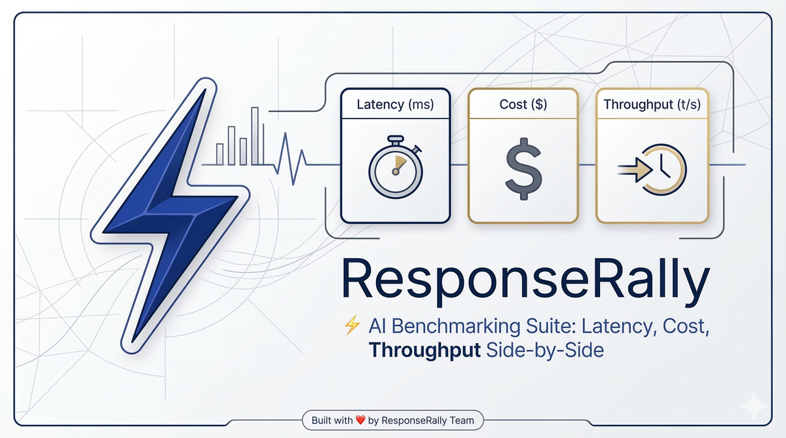
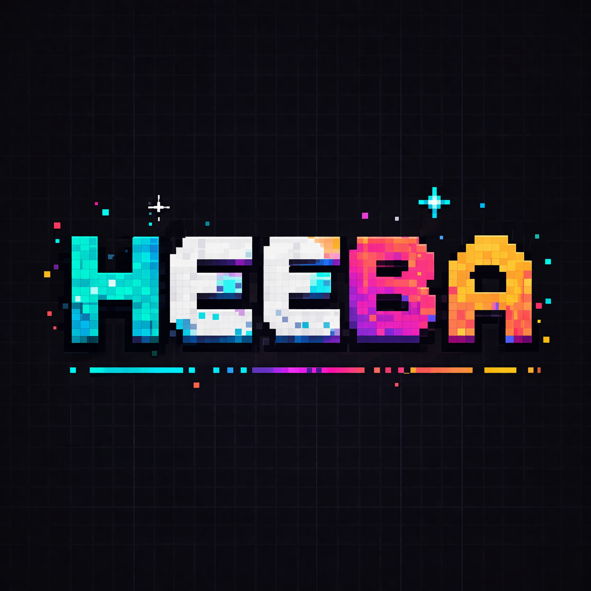
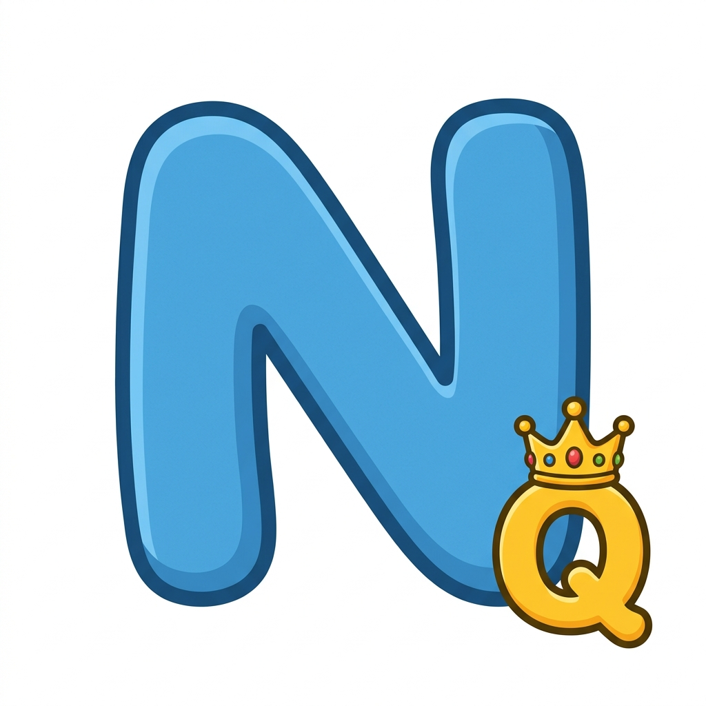
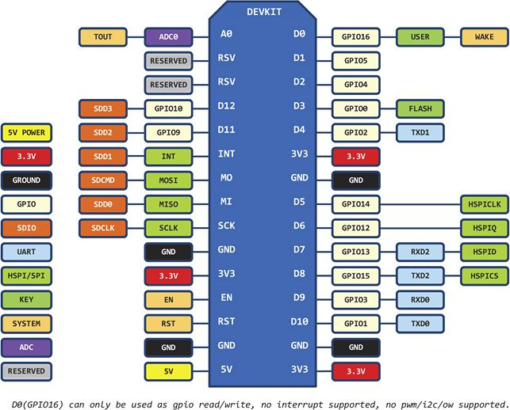
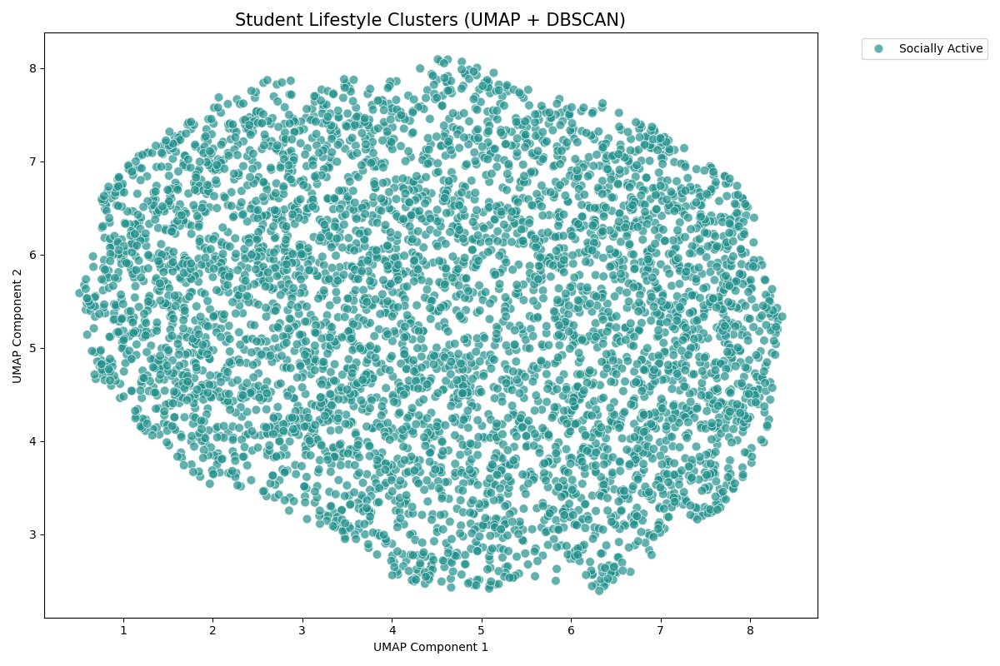

23
Public repositories on GitHub.
23 repositories spanning Flutter mobile apps, AI/ML systems, CLI tooling, desktop apps, full-stack web platforms, and IoT.
Public repositories on GitHub.
Distinct programming languages.
Frameworks, libraries, and runtimes.
Mobile, Desktop, AI/ML, Full Stack, CLI, IoT, Frontend, Backend.

Submit one prompt to N AI models in parallel and compare latency, token throughput, and cost in real-time. Persistent history, per-user stats, custom OpenAI-compatible provider registration, JWT auth with email OTP.

Private, config-driven AI terminal companion powered by local GGUF models (llama.cpp) and online LLMs (Ollama, OpenRouter). TUI, CLI, Telegram bot, and Web interfaces. 18-module email automation, recursive security audits, weather intelligence, agentic loops. Compiles to a standalone Windows .exe.
Two-halves expense settlement product: a React 19 web app that turns a pile of receipts, IOUs, and shared bills into the minimum number of "X pays Y" transactions (bidirectional cancellation, transitive reduction, circular elimination, greedy net-settlement — 15 documented edge cases A through O), and a Flutter Android wrapper (splitr_warpper) that packages the deployed Vercel site inside a webview_flutter container and exposes native file import/export via two JavaScriptChannels (SplitrExport, SplitrImport) bridged to file_picker and the system Downloads folder.
Passwordless Linux login via Flutter mobile app. Fingerprint biometric signs an authentication request with HMAC-SHA256; Bluetooth RFCOMM sends it to a Linux helper daemon that writes a short-lived token file consumed by a custom PAM module. Bluetooth-only — fingerprint data never leaves the phone.

Flutter app turning the regional N-Queens logic puzzle into an interactive social experience. Camera-based board scanning, AI step-by-step solver (MRV + forward checking), AES-encrypted QR sharing, multiplayer Co-op / Compete modes via Firebase RTDB, and an Android Quick Settings tile that captures any on-screen board and overlays a floating solution.
Fully autonomous peer-to-peer offline communication app. Secure messaging, file sharing, and voice/video calling over Wi-Fi/Bluetooth mesh WITHOUT internet or servers, using UUID-based device identity and XOR-encrypted QR-based peer pairing.
Korean birthday alarm app. Add a friend's birthday once; the app rings with the user's chosen music at the scheduled time, deferring the full alarm screen until the phone is unlocked. Two alarms per birthday (D-Day + N-day advance), custom ringtones, OEM-aware battery-optimization handling (Xiaomi/Huawei/Samsung/Oppo/Vivo/OnePlus), Firebase cloud sync.
Raspberry-Pi-driven home-automation platform. Flask server controls relays (light/AC/washing machine) on GPIO pins plus a security subsystem. Flutter mobile app provides a chat-style control panel with voice recording + speech-to-text, real-time notifications, and Material 3 themed UI. Android home-screen widget toggles appliances without opening the app.

Windows store billing and inventory management desktop app. Multi-theme PyQt5 GUI, online (MongoDB Atlas) + offline modes with auto-sync, GST calculation, single-instance enforcement, and a packaged Inno Setup Windows installer.
Healthcare management desktop system for medical centers combining real-time RFID hardware communication (USB/Serial) with patient registration, queue management, and doctor consultations. Paired with ESP8266 firmware (MFRC522 RFID).
Peak — a provider-agnostic AI coding IDE (VS Code Cursor-style) with a peacock-themed, minimal-light UI. File explorer, editor tabs, terminal, git view, AI panel, command palette, inline prompts/diffs, multi-provider LLM manager, extensions view. Runs as Electron desktop app and in the browser via Vite + Cloudflare.
Professional-grade PyQt5 serial port monitor for engineers working with microcontrollers, sensors, and embedded devices. Tabbed GUI with 4 themes, live data display, hex/text/binary transmission, logging, single-instance enforcement, and PyInstaller packaging.
On shared/lab/kiosk Windows machines, Napify shows a brief fullscreen calming Lottie animation (~7s) that blocks keyboard input whenever a system Sleep / Hibernate / Shutdown / Logoff event fires. Prevents users from yanking the lid or canceling shutdowns mid-update. Built on pywin32 + pywebview + ctypes Win32 bindings.

WPF-based file system editor for MicroPython boards (ESP8266/ESP32). Browse, edit, upload, download, create, and delete files on a MicroPython device over a serial COM port by wrapping the ampy CLI. Programmatic (no-XAML) UI with tabbed RichTextBox editors and a tree-view explorer.

ML coursework portfolio covering Candidate Elimination, Naive Bayes (from scratch + HuggingFace), PCA, Decision Trees, Q-Learning for Smart Classroom Energy Optimization, CNN-based MNIST handwritten digit recognizer, and a dlib-backed real-time face recognition web app. Includes Burnout Risk Prediction (Gradient Boosting) and Lifestyle Pattern Discovery (UMAP + DBSCAN).
FastAPI backend for the N-Queens Puzzle Studio Flutter app. Handles player identity & FCM registration, multiplayer room lifecycle, board image processing via OpenCV, and Daily Quest puzzle generation + FCM broadcast via Vercel Cron. Companion to the N-Queens-Solver Flutter app.
React SPA that fetches Indian news from NewsAPI.org, filters to Sports / Political categories via keyword scoring, and sends selected articles to a locally hosted Ollama Gemma3:1b LLM to generate an 'opposition viewpoint' and sentiment analysis. Includes a chat interface with voice input via Web Speech API.
Enterprise-grade AI image-deduplication CLI. Finds exact (SHA-256), perceptual (pHash/dHash/aHash), and AI-similar (OpenCLIP ViT-B-32 embeddings + FAISS cosine similarity, crop detection, ORB/AKAZE feature matching) duplicates across massive image collections. Quality-scores each candidate and safely moves inferior copies to the OS Trash (send2trash). Never deletes by default.
Read-only terminal-based disk space analyzer and similarity/duplicate detector. Reports where storage is going, why it is there, whether duplicates exist, and how to navigate to them. Multiple visualization modes (tree, sunburst, treemap, bar, pie), multiple output formats (table/json/csv/ndjson/yaml/markdown/html), snapshots & diff, watch mode. Pure stdlib Python — zero runtime dependencies.
Windows-friendly AES-256 EAX authenticated encryption CLI (invoked as mg) for files and folders. PBKDF2-HMAC-SHA256 key derivation, key generation/rotation, SHA-256 streaming hashing, AES benchmarking, and Windows Explorer right-click integration via .reg file.
A framework-agnostic marketing-automation workflow builder packaged as a reusable Web Component (<c1x-workflow-builder>) using Custom Elements + Shadow DOM. Drag-and-drop node editor with triggers/actions/logic nodes, JSON import/export, undo/redo, and validation. Distributed as an npm package via Rollup.
Animated PHP/MySQL food ordering web application with animated video-background landing page, secure user registration/login, menu browsing, cart management, order checkout, and order history. Originally a DBMS academic project.
CiferTrooper's digital ecosystem comprising three independent React 19 / TanStack Router web apps: Core Interface (landing + IP Locator/Grabber), Academy (cybersecurity learning platform with 12+ courses), and Commerce (gadget e-commerce storefront). Dual-mode architecture — works with static data or can be hot-wired to a backend API.
Animated PHP/MySQL login & registration system with a One Piece / Luffy video background, comprehensive 3NF schema, activity log tracking, password history enforcement, and role-based access control infrastructure.
Marketing/info SPA for 'AI Yutham', a company offering 3D holographic display solutions (retail, events, automotive). Showcases products, services, sectors, and contact information with animated dark-themed UI and glassmorphism.
Company marketing website for 'Nexus Technology' — product showcase with hero, features, testimonials, pricing, FAQ, client logos, integrations, metrics, and product detail pages. Covers both software and hardware product categories.
Step-by-step setup kit for flashing MicroPython onto a NodeMCU ESP8266 V3 (CH340) board from Windows. Bundles firmware, CH340 driver installer, sample main.py (Wi-Fi + HTTP server), and PowerShell GUI helpers (DumpCodeToESP, OpenSerialMonitor, CommitPush).
Personal collection of Java solutions for classic LeetCode algorithmic problems (Two Sum, Add Two Numbers, Valid Parentheses, Longest Substring Without Repeating Characters, Palindrome, etc.). Each file is a self-contained runnable Java program.